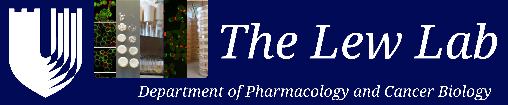

Welcome
People
Research
Resources
Lab Alumni
Online Resources:
The Lew Lab finds the following links and online resources helpful:
Department of Pharmacology and Cancer Biology
Program in Cell and Molecular Biology
Program in Genetics and Genomics
Developmental and Stem Cell Biology Program
The Duke Light Microscopy Core Facility
Duke Proteomics